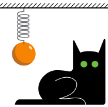
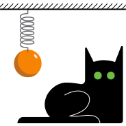

Using mathematical notation, autoconversion to and from LaTeX. Operators, functions, and data structures as expressions. Symbolic computation principles and functional programming basics.
Solving algebraic and differential equations. Plots and graphics. Interactive expressions and parametric animation. Automated derivation of Lagrange equations. Numerical computations on a grid, procedural raster images.
*Native 3D graphics, generating and exporting 3D models. Spline animation. Raster image processing.
Mathematical foundations, Bézier curves. Creating and editing vector paths, appearance settings, compound shapes.
Combining raster and vector assets, live file links, importing .pdf files, dealing with font issues, appearance-preserving embedding. Vectorizing raster images. LaTeX expressions.
Gestalt principles in graphic design. Working with text blocks, character and paragraph settings. Poster layout, object alignment and distribution. Vector image formats, complying with print requirements, format conversion, exporting to raster formats.
Navigation in 3D space, Viewport shading modes. 3D mesh primitives and transform properties: location, rotation, and scale. Object parenting, active vs passive transformation.
Edit Mode, manipulating indivisual verteces, edges, and faces of a polygonal object. Vertex normals and shading, dependence on mesh topology. Modifiers. Subdivision modeling: mathematical foundations, managing subdivision smoothing.
*Physically based rendering, material properties, physical foundations, shaders. Procedural geometry. Importing data from Wolfram Mathematica and LaTeX.
**Rigid-body and fluid simulations. Spline animation. Python scripts.
Viewport navigation, adding primitives and importing 3D models, basic tools for scene composition. Spline (keyframe) animation. Importing data from Wolfram Mathematica and LaTeX.
Programming with Blueprints, mechanical systems and constraints, real-time ODE integration. Trajectory visualization.
Optimizing settings for low-end PCs. High-quality video rendering: export settings, Pathtracer, physically based materials, lighting and camera setup.
*Native Unreal Engine physics, mathematical modelling on GPU using Material Bluerprints, interactive visualizations.
Machine learning basics: reducing problems to pure functions, neural networks as universal approximators. Coding a neural network from scratch: loss function, stochastic gradient descent, deriving backpropagation equations. Image and video restoration: training data synthesis, available implementations.
Mathematical foundations of diffusion image generation: image space and target manifold, training data synthesis with diffusion, reverse diffusion and ODE solvers (Samplers), mode collapse and stochastic samplers. Unguided vs guided generation, image-text cross attention, classifier-free guidance (CFG) scale. Variational autoencoders (VAE), data compression, latent diffusion.
Application: Stable Diffusion, interfaces (Automatic1111, ComfyUI, …), generation based on initial images (img2img), inpainting, diffusion for image restoration, integration with Adobe Photoshop.
*Fine-tuning, Low-Rank Adaptations (LoRA), extra conditioning (Control Net). Interpretability. Convolutional Neural Networks (CNN), U-Net architecture, generative adversarial networks (GAN).
Aspects of real-time GPU simulations and rendering, graphical pipeline. GLSL basics: program structure, variable types, function declarations. Functional paradigm and polymorphism.
Coordinate system: drawing gradients, disks, and circles. Vectors, matrices and other data structures, swizzling. Build-in mathematical functions, interpolation. Drawing complex shapes, 2D signed-distance function (SDF), straight-line segments, dashing.
Time-dependent animations, ODE solvers.
PDE simulation: derivative functions dFdx and dFdy, buffers.
Integration into HTML with <canvas>, passing data from CPU, uniform variables, mouse and keyboard control.
Exporting animation frames into files.
Foundational design principles: repetition, contrast, proximity. Visual communication means: size, position, alignment, tangents, fonts, colors. Optical compensation.
Typeface anatomy, serif vs sans-serif, typographical point. Repetition and contrast in font attributes: family, size, weight, tracking. Optical compensation in fonts, kerning. Font libraries, file formats.
Color schemes: analogous, complementary, and tetrad palettes, connection to proximity and contrast principles, correlation with the other visual means. Color and gradient libraries.
Microsoft PowerPoint: Selection Pane, native vector graphics and alignment tools, importing vector images and LaTeX expressions, extracting source files from presentations.
Interactive elements, dynamic references, animation and transitions, layer naming convention for the Morph transition. Baking presentations, exporting to video.
RGB color space from the first principles. Curvilinear coordinates in the color space: HSL, HSV, and LAB. Nuances of color terminology: Hue, Shade, Tone, and Tint. Conversion of images to grayscale and CMYK, gray component replacement. Color (bit) depth, HDRI.
Blending modes in Adobe Photoshop and Wolfram Mathematica, multiply and screen as a substitute for masking.
Hue/Saturation adjustment, selective color editing, gamma correction.
Colorizing grayscale images: working with channels, gradient maps in Wolfram Mathematica, Adobe Photoshop, and After Effects.
Color decomposition, combination with frequency (wavelet) decomposition, application in retouching.
Image convolution, linear and box kernels, separation of variables. Motion (directional) blur, camera blur, Gaussian blur. Drop shadows and glow. Spatial frequencies, wavelet decomposition. Convolution filters: Sharpen, High Pass, Unsharp Mask, Edge detection.
Image deconvolution and denoising, loss-of-information obstacles (out-of-bounds blur, noise infinite frequency).
Random number generation (LCG and Mersenne Twister from the first principles, connection to logistic map and Lorenz attractor), random seed. Gaussian and fractal noise, implementation in Adobe Photoshop and After Effects.
Reaction-diffusion patterns.
Mathematical foundations: ray tracing vs projection (rasterization) rendering. Ray tracing variations: path tracing, ray marching, cone marching. Physically based rendering (PBR) and materials: the Rendering equation, Bidirectional Scattering Distribution Function (BSDF), metallic-roughness model. Specular reflections: Fresnel coefficients, Schlick's approximation, highlight models. Mesh geometry and normals: Phong shading, normal maps. Global illumination and ambient occlusion (AO), implementation with Fibonacci lattice. Anti-aliasing (AA), motion blur, and depth-of-field blur with combined supersampling technique.
Native 3D functionality in Wolfram Mathematica: materials and lighting, generating and exporting 3D meshes.
File formats and export: raster images (PNG, PSD, WebP, Jpg, BMP), vector images (PDF, Ai, SVG), video and animation (GIF, WebP, MPEG4 + H.264, WebM), vector animation (SVG, HTML + CSS).
Importing vector formats (Microsoft PowerPoint and Word, HTML, Unreal Engine, Adobe After Effects and Photoshop, Wolfram Mathematica), importing PDF into Adobe Illustrator, fixing font issues.
Intermediate export from Wolfram Mathematica: frame sequences (PNG), animation keyframes (CSV and CSS), 3D meshes (Obj).
Assembling animations from frame sequences (Adobe Photoshop, Krita, Photopea, ffmpeg), converting video to frame animation (Adobe Photoshop).
Importing animation keyframes from CSV tables (After Effects, Unreal Engine).
Extracting source files (images, video, 3D models) from Microsoft PowerPoint and Word.
Rendering LaTeX expressions (Wolfram Mathematica, Adobe Illustrator plugins and scripts, Microsoft PowerPoint and Word, HTML, Inkscape, pdflatex + Ghostscript, web tools), importing rendered expressions (Microsoft PowerPoint and Word, Unreal Engine, Adobe Illustrator, Inkscape).
Converting Wolfram Mathematica expressions to and from LaTeX source code. Optical Character Recognition (OCR) for formulae (images to LaTeX source code).


 
